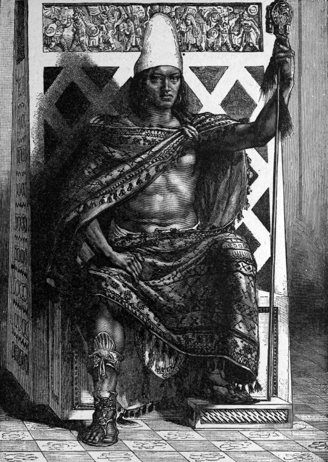

Moctezuma recibe a los hombres de Castilla en la calzada de Iztapalapa
Entre collares de flores y discursos traducidos, el señor de México abrió hoy su ciudad a don Hernando Cortés y sus cuatrocientos soldados. Los castellanos, deslumbrados por la ciudad de las aguas, fueron aposentados en el palacio de Axayácatl. Bajo la cortesía, la tensión se palpa.

La ciudad entera se volcó hoy sobre la calzada de Iztapalapa para ver pasar a los extranjeros. Desde el amanecer, miles de canoas cubrían la laguna y las azoteas hervían de curiosos, mientras la columna castellana avanzaba entre los dos lagos: caballos que aquí nadie había visto, corazas que devolvían el sol, banderas, lebreles, y detrás millares de guerreros tlaxcaltecas. Al frente de la ciudad salió el gran señor Moctezuma Xocoyotzin bajo un palio de plumas verdes y oro, llevado por sus principales, que barrían el suelo y tendían mantas para que sus pies no tocaran la tierra.
El encuentro tuvo la solemnidad de las grandes ceremonias. Don Hernando Cortés descabalgó y quiso abrazar al señor mexica, pero los príncipes lo detuvieron: nadie toca al huey tlatoani. Hubo collares de flores y de oro, reverencias, discursos que fueron pasando de lengua en lengua por medio de la india Malintzin, a quien los castellanos llaman doña Marina, y del clérigo Jerónimo de Aguilar. Moctezuma dio a los recién llegados la bienvenida y los aposentó en el palacio de su padre Axayácatl, junto al recinto sagrado. Lo acompañaban los señores de Texcoco y de Iztapalapa, flor de la nobleza de esta tierra.
Los castellanos llegan tras meses de marcha desde la costa, donde fundaron una villa que llaman la Veracruz. Vienen en nombre de un rey que reina del otro lado del mar, sobre las tierras que el almirante Colón avistó hace veintisiete años y cuya nueva recogió entonces este diario. En el camino hicieron alianza con Cempoala y con Tlaxcala, enemiga vieja de México, y dejaron sangre en Cholula. Moctezuma les envió oro y ruegos de que no subieran; ellos subieron. Hoy la cortesía lo cubre todo, pero nadie ignora que ambos huéspedes se miran como se miran los que se miden.
Entre los soldados, el asombro vence al cansancio. Uno de ellos, Bernal Díaz, mozo de Medina del Campo, dice que al ver tantas ciudades sobre el agua y esa calzada recta y llana todo les parecía «cosa de encantamiento», como las que cuentan los libros de caballerías. Los mexicas, por su parte, observan las barbas y las ropas con cauteloso pasmo, y cuentan que el señor Moctezuma guarda desde hace años presagios que lo desvelan. En los mercados se habla de los venados sin cuernos que obedecen a los extranjeros y del trueno que llevan en tubos de metal.
Este diario deja constancia de una jornada que no se parece a ninguna otra. Dos mundos que no se conocían han cruzado hoy palabras corteses sobre una calzada, entre flores y oro. El señor de México ha abierto su casa a cuatrocientos forasteros, confiado en su poder, que es inmenso, y en sus dioses, que son antiguos. Los forasteros sonríen, agradecen y cuentan los tesoros con los ojos. Quiera el cielo que tanta cortesía sea sincera de ambas partes. Hay filos que no se ven porque están envainados, y esta ciudad espléndida duerme esta noche con la puerta abierta.